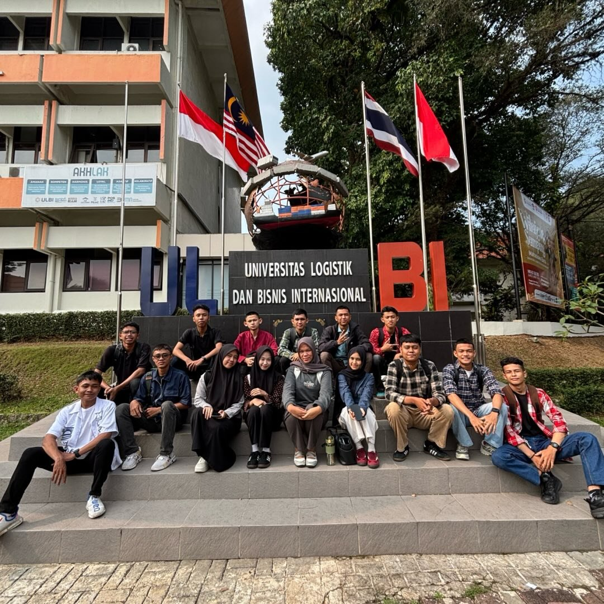

Tentang Kelas
Kelas 12 D4 adalah kelas D4 Teknik Informatika yang saling mendukung dalam belajar, mengerjakan proyek, dan menjelajah bersama.
Hasil Karya Kelas Kami
Kumpulan proyek dan karya yang telah kami buat bersama.
Events
Kegiatan dan acara yang pernah kami ikuti bersama.